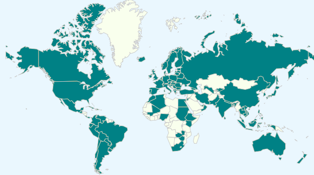

(C) 2012 CTheory Books. All rights reserved.
The titles available on the CTheory Books website are for individual use (peer-to-peer) only. All other organizations and individuals including publishers, editors and librarians must contact CTheory@uvic.ca for permission to reproduce work published on the CTheory Books website.
CTheory Books represent an expanding international circle of theorists, writers, artists, and poets who explore forms of critical thinking that are historically engaged, politically critical and theoretically diverse. CTheory Books are read in over 100 countries, from every continent and region.
Print versions of selected titles are available in the USA by St. Martin's Press (Palgrave). Translations available in German (Passagen Verlag - XMedia), Italian (Apogeo), Japanese (Hosei University Press), Chinese (Science & Technology Hong Kong).